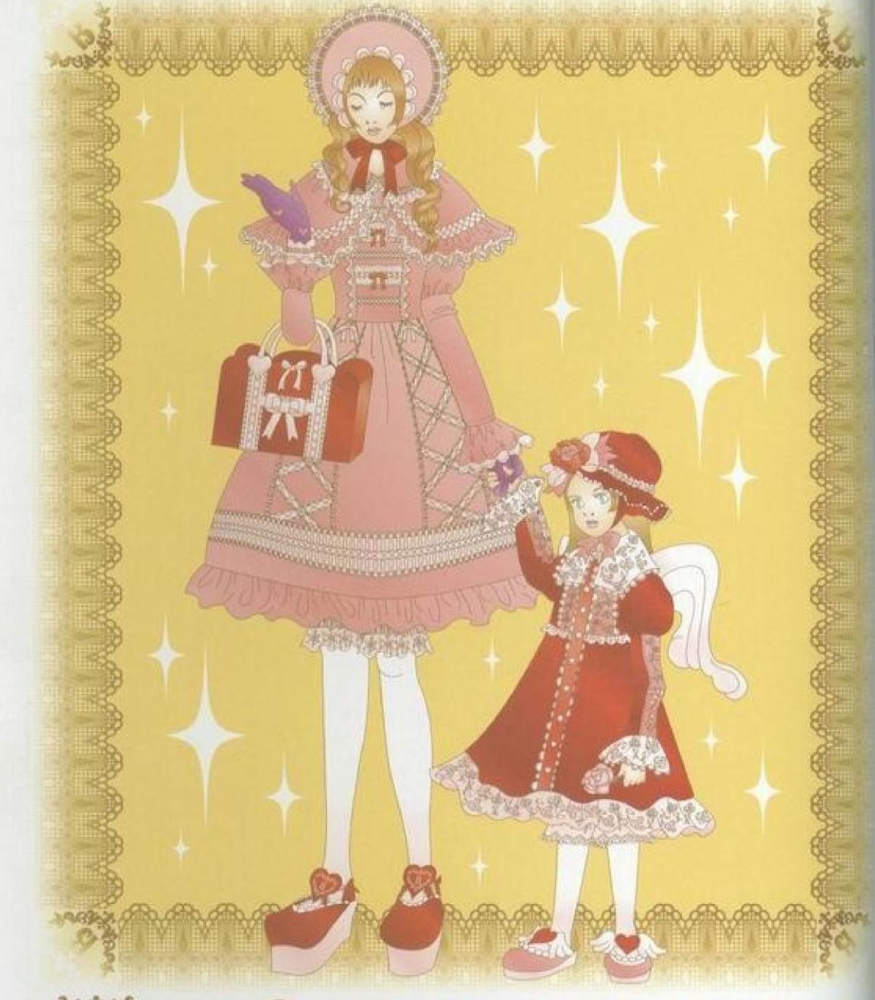
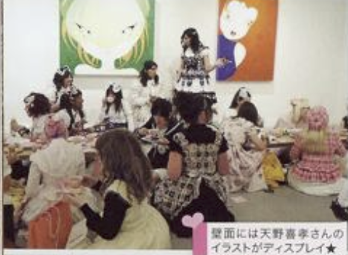

WHERE AM I?
Lolita is a fashion that originated in Japan and focuses on dressing feminine. Lolita fashion
tends to have a distinctive silhouette, which is achieved with the use of petticoats, and often
focuses on the cute or feminine, sometimes taking inspiration from antiquity.
Lolita fashion has nothing to do with the other type of lolita in case you were wondering.
I promise that this style is not meant to attract pedophiles. The style of Lolita developed
before its name came about, as a matter of fact, Lolita fashion is more focused towards
reclaiming femininity in a hyper-feminine fashion from the male gaze.
GET THE BIG PICTURE
It's hard to talk about Lolita's roots without going back quite a bit further than the 1970's. We'll have to go earlier still to the 1950's and even further into antiquity to the Victorian and the Rococo eras. Of course, there is no frilly line of lace stretching from one era to the next that leads directly to Lolita today, these are all completely separate styles that Lolita draws much of it's inspiration from. The cute and girly silhouette of the 1950's. The elegance and details of the Victorian era, and the decadence of the Rococo era are all different periods that inspires Lolita.
GET OUT THERE, START WEARING!
I am by no means, a Lolita expert. Go check out other blogs and sources online to see what others recommend. I've been dressing in Lolita since highschool, the pandemic is when I bought by first dress! Remember, there are rules to Lolita you must first learn. Then you think about breaking them. The rules I followed were:
- A main piece, like a jsk, a printed skirt, etc.
- A blouse underneath, long or short sleeves
- Some sort of wrist wear if your blouse is short!
- Covering your legs, like printed tights or ruffled socks
- Shoes like heels, flats, and boots.
- Headwear!! Bows, bonnets, headresses all work
Make sure when creating a coord that all the colors are cohesive and pleasing to the eye! And
don't
forget to match prints too! Sure those two prints are both blue, but one of them has a clear
fish
theme and the other is Alice and Wonderland themed...
I definately do not follow all these rules perfectly! In the winter, I always swapped the blouse
for
a warm turtleneck. And when I knew I'd do a lot of walking, I just wore comfortable sneakers. I
did
try to match my sneakers to the coord though!
SEE A MONTH OF SUNDAYS.
You're wearing Lolita, now what?
Get out there! Join local Lolita and EGL groups and participate in tea parties and
events! Write an online blog! Or just go outside and normally go about your day, I must say
it's fun to show up to my morning software development classes in poofy dresses.
DON'T WASTE ANOTHER DAY.
Get out there, start wearing! Unfortunately, a lot of Lolita brands nowadays are
overpriced for bad quality materials, I am not paying $140 for a dress made of 100%
polyester and fraying everywhere!
So, I normally use sites like Lacemarket to buy Lolita secondhand, or I keep my eye
peeled for "regular" clothes that could be styled as Lolita.
Feel scared to wear extremely frilly outfits out in public? Don't worry! Start
small, try slowly incorporating elegance into your daily wear, like kitten heels,
A-line
skirts, frilly cardigans. You could even try wearing Lolita without a petticoat, and
trying to style it as "not Lolita". This is another way to get more out of your
Lolita
pieces if you don't dress in it daily, which is the case for me.